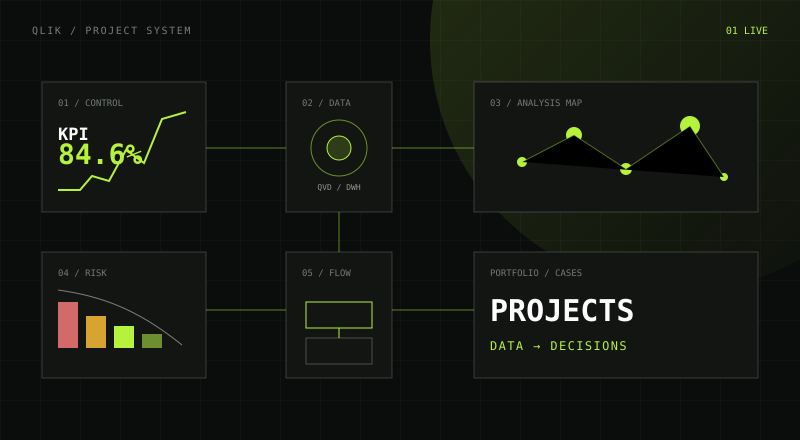

Санкт-Петербург · открыт к предложениям
Строю BI-системы,
на которые можно опереться.
Меня зовут Павел Шурмистров. Более пяти лет развиваю корпоративный BI: проектирую архитектуру данных, ускоряю Qlik Sense, выстраиваю процессы и управляю командой.
RELOAD PERFORMANCE7×
after optimization
01SOURCESERP · API · Files
02QVD / DWHETL · Quality
03QLIKInsights · KPI
Last reload 08:42:16Rows processed 28.4M
Senior BI Developer BI Solution Architect Team Lead
SHAOSHUR® 2026
01 / ПОРТФОЛИО QLIK
Проекты Qlik.
Каталог прикладных решений: задача, несколько экранов и файлы для самостоятельного изучения.
Открыть портфолио ↗
ПРЯМЫЕ ССЫЛКИ
01 / QLIK SENSE
Казначейство
4 QVF · 13 экранов
↗

02 / КОНТАКТЫ
На связи.
Работа, проекты и Qlik-практика — личные контакты, канал и актуальное резюме в одном месте.
03 / ЭКСПЕРТИЗА
От сырых данных
до решения.
Проектирую не отдельный отчёт, а весь путь данных — устойчивый, быстрый и понятный команде.
BI-архитектура
Проектирование слоёв данных, DWH и QVD, интеграция источников, правила доступа и стратегия развития платформы.
- Qlik Sense Enterprise
- DWH / QVD
- QMC & Section Access
- Greenplum / PostgreSQL
ETL и моделирование
Инкрементальные загрузки, ассоциативные модели, контроль качества данных и оптимизация тяжёлых расчётов.
- Qlik Script
- SQL
- Set Analysis
- Performance tuning
Техническое лидерство
Формирование и развитие команды, декомпозиция задач, code review, стандарты разработки и обучение специалистов.
- Team leadership
- Business analysis
- Code review
- Knowledge sharing
QLIK SENSEQLIKVIEWSQLJAVASCRIPTPYTHONCSS
04 / ОПЫТ
Системный взгляд.
Практика руками.
Более пяти лет в корпоративном BI: от разработки ETL и дашбордов до архитектуры платформы и технического лидерства.
59.93° N / 30.36° EСанкт-ПетербургОткрыт к предложениям о работе
Марвел (F+)
Lead BI Developer
- Спроектировал корпоративную BI-архитектуру и участвовал в развитии DWH.
- Сократил время обновления ключевой аналитики в 7 раз.
- Сформировал команду из 5 специалистов и внедрил инженерные стандарты.
Ростелеком
Senior BI Developer
- Разрабатывал ETL-процессы, модели и инкрементальную загрузку из ERP.
- Оптимизировал Set Analysis и скорость интерфейсов для сотен пользователей.
- Администрировал Qlik Sense Enterprise и выполнял роль технического лида.
BI Consult
Qlik Sense Developer
- Разрабатывал модели данных, ETL и аналитические интерфейсы.
- Создавал документацию и обучающие материалы.
- Проводил вебинары и помогал пользователям осваивать Qlik Sense.
 ▶
2020 / ТОЧКА ОТСЧЁТАС чего началась моя карьера в BIАрхивное видео о BI Consult — один из первых публичных эпизодов моего пути в Business Intelligence.
▶
2020 / ТОЧКА ОТСЧЁТАС чего началась моя карьера в BIАрхивное видео о BI Consult — один из первых публичных эпизодов моего пути в Business Intelligence.
Дальневосточный федеральный университет, Владивосток
Программная инженерия
2015 · МагистрДальневосточный федеральный университет, Владивосток
Математическое и информационное обеспечение экономической деятельности
2013 · Бакалавр05 / ИНСТРУМЕНТЫ
Инструменты.
Пет-проекты и инженерные наработки вокруг Qlik: от работы с QVD и библиотеками скриптов до самопроверки знаний и анализа процессов.
QLIK EXTENSION · V1.5.3ZIP + DEMO QVF
PROCESS FLOW / QLIK SENSE
01
Process Flow
Analyzer
Интерактивная карта переходов для Qlik Sense: объём кейсов, среднее время, узкие места и выборки прямо на графе.
- Qlik Extension
- Process Mining
- Interactive SVG
- Demo QVF
DESKTOP APP · MVPWINDOWS x64
02
MyQvd
Локальный просмотрщик и редактор метаданных QVD.
- Tauri 2
- React 19
- Rust
- OpenQVD
QLIK SCRIPT TOOLKITPUBLIC GITHUB
03
Qlik Script Toolkit
Модульные QVS-библиотеки с единым контрактом: подключение одной строкой, встроенные справка, тестирование и очистка, conventions и skills для AI-агентов.
- pInclude
- info / test / clear
- AI Skills
- QVS
WEB APP · 2026 LIVE DEMO
04
Qlik Sense
Trainer
50 отобранных вопросов по Qlik Sense: модель данных, ETL, Set Analysis, QVD, производительность и практические сценарии.
- Vanilla JS
- LocalStorage
- Adaptive UI
06 / МАТЕРИАЛЫ
Обучающие материалы.
Авторский курс по Qlik Sense, разборы Process Mining и материалы о практической стороне BI.
01
Обучение Qlik Sense
Последовательный авторский курс: от знакомства с платформой до самостоятельной разработки приложений.
Открыть страницу курса ↗Новые материалы в ShurQlik ↗ ▶КУРС · #00
▶КУРС · #00Что такое Qlik Sense и чем он вам полезен
Вход в платформу без лишнего технического шума.
 ▶КУРС · #01
▶КУРС · #01Данные, меры, измерения и отчёты
Как устроен Qlik Sense изнутри.
 ▶КУРС · #02
▶КУРС · #02Создаём первое приложение
От загрузки данных до рабочего результата.
 ▶КУРС · #03
▶КУРС · #03Основные визуализации
Как выбрать подходящую форму представления данных.
02
Process Mining
Отдельное направление о цифровизации процессов и применении процессной аналитики в Qlik Sense.
Подробнее о направлении ↗

ИНОГДА BI ЗВУЧИТ БУКВАЛЬНО«Грустный заказчик» — песня о болях и надеждах BI-индустрии
Кавер в соавторстве с Алисой, для шоу в BI Consult.
07 / КАРЬЕРА И КОНТАКТ
Открыт к
следующей роли.
Рассматриваю позиции Lead BI Developer, Senior BI Developer или BI Solution Architect — удалённо, гибридно или в Санкт-Петербурге.